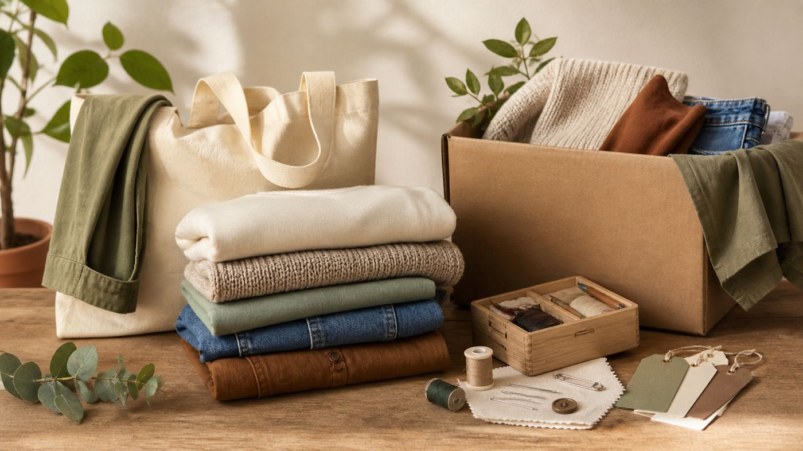

🛍️
Buy Less
I want to avoid unnecessary purchases and only buy clothes that I genuinely like or need.
My plan focuses on realistic habits: buying less, thrifting when possible, repeating outfits confidently, and giving unused clothes to people who can still use them.
View Goals
I want to avoid unnecessary purchases and only buy clothes that I genuinely like or need.
Repeating outfits helps me use my clothes properly instead of treating clothing as disposable.
I already prefer thrift stores because the pieces can feel more unique than many regular stores.
My main challenge is wanting more variety in my outfits. Sometimes, new clothes feel tempting because they can make my style feel fresher.
To manage this, I can restyle what I already own, choose thrifted pieces carefully, and pass unused clothes to my brother or relatives instead of throwing them away.
Before buying something, I can ask: Do I already own something similar? Will I wear this often? Can I thrift this instead? These questions make the decision more intentional.
Give wearable clothes to someone else instead of discarding them.
Fix small tears, buttons or loose seams when possible.
Exchange clothes with friends or family to refresh outfits.
Buy fewer pieces that match your style and can last longer.